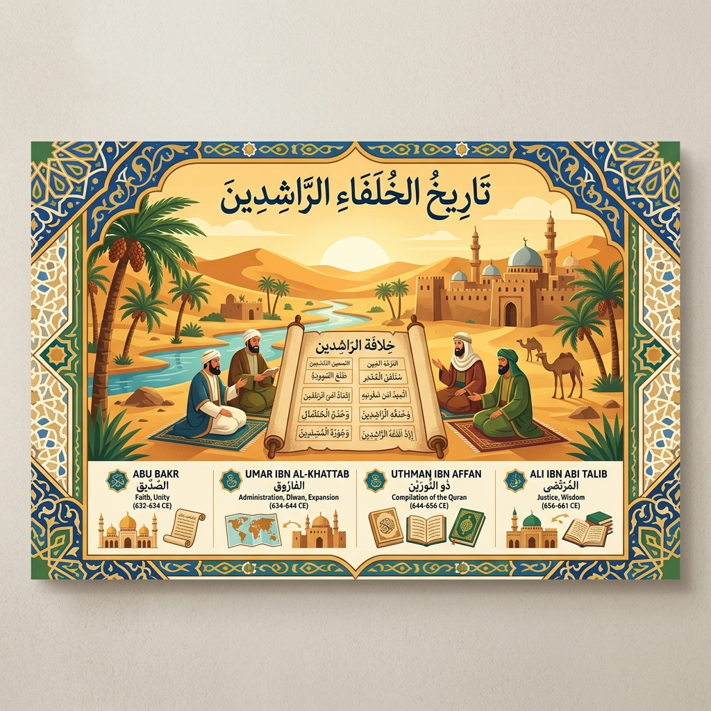
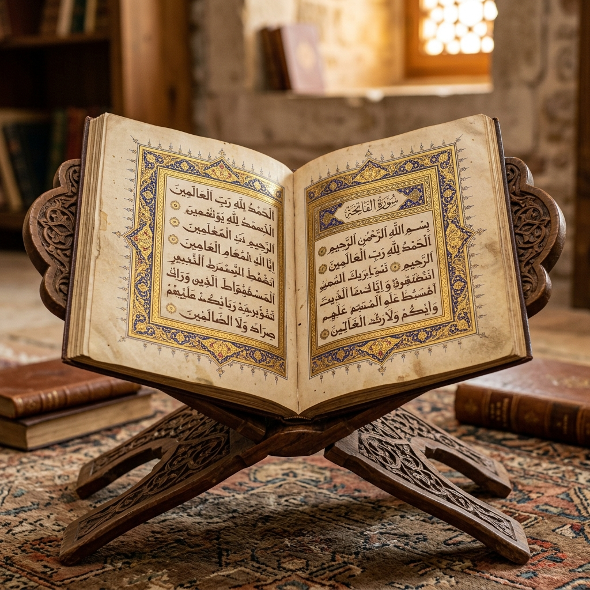
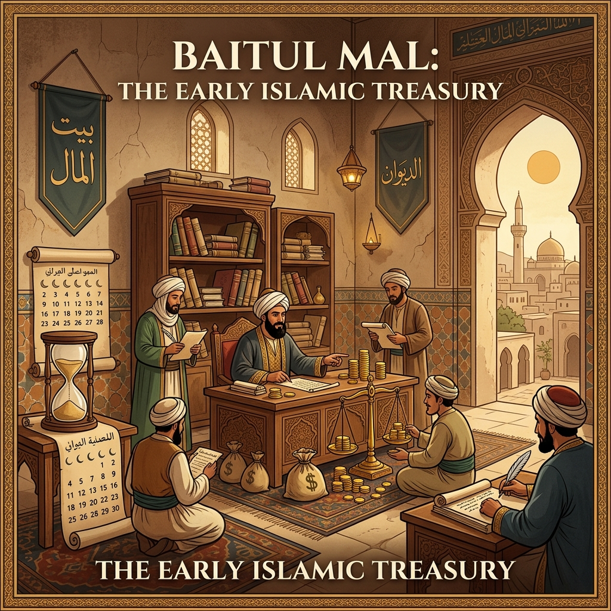

Apa itu Khulafaur Rasyidin?
Khulafaur Rasyidin (الخلفاء الراشدون) berarti para pemimpin yang mendapat petunjuk. Mereka adalah 4 sahabat utama pengganti fungsi kepemimpinan peradaban Islam pasca wafatnya Rasulullah SAW.

Khalifah Abu Bakar as-Siddiq (11–13 H / 632–634 M)
Gelar: As-Siddiq (Orang yang Membenarkan)
A. Biografi: Nama aslinya Abdullah bin Abi Quhafah. Sahabat karib Rasulullah SAW dan orang dewasa pertama yang masuk Islam (*Assabiqunal Awwalun*).
B. Kebijakan & Prestasi Utama:
- Penumpasan Perang Riddah: Menindak tegas pembangkang zakat, kaum murtad, dan nabi palsu (Musailamah Al-Kazzab) pada *Perang Yamamah*.
- Kodifikasi Al-Qur'an Pertama: Diusulkan Umar bin Khattab karena gugurnya 70 *huffaz* di Perang Yamamah. Panitia diketuai Zaid bin Tsabit.
- Rintisan Ekspansi Wilayah: Mengirim pasukan merintis pembebasan wilayah Irak dan Syam dari dominasi Persia & Romawi.

Visualisasi SejarahPengumpulan lembaran wahyu Al-Qur'an pertama kali dilakukan pada masa Abu Bakar.
Khalifah Umar bin Khattab (13–23 H / 634–644 M)
Gelar: Al-Faruq (Pembeda Hak & Batil) & Amirul Mukminin
A. Biografi: Berasal dari Bani Adi. Dikenal tegas, adil, berwibawa, dan sangat sederhana.
B. Kebijakan & Reformasi Administrasi:
- Penetapan Kalender Hijriah: Berpatokan pada peristiwa Hijrah Nabi SAW dari Makkah ke Madinah.
- Lembaga Kas Negara Baitul Mal: Membentuk kas negara (*Baitul Mal*) serta sistem pencatatan gaji tentara (*Diwan*).
- Kemenangan Perang Qadisiyyah & Yarmuk: Kemenangan atas Persia, Romawi, serta pembebasan Yerusalem.
- Kota Baru & Kehakiman: Mendirikan kota Basrah, Kufah, Fustat, serta mengangkat hakim (*Qadhi*).

Visualisasi ReformasiLembaga Baitul Mal & Dewan Gaji didirikan Umar bin Khattab untuk keadilan ekonomi.
Khalifah Utsman bin Affan (23–35 H / 644–656 M)
Gelar: Dzun Nurain (Pemilik Dua Cahaya)
A. Biografi: Berasal dari Bani Umayyah. Dikenal dermawan, pemalu, dan penyabar. Menikahi dua putri Rasulullah SAW.
B. Kebijakan Utama:
- Standardisasi Mushaf Utsmani: Menyusun Al-Qur'an seragam dialek Quraisy dan menggandakan 5-6 salinan ke kota utama.
- Armada Laut Islam Pertama: Membentuk armada laut pertahanan untuk menjaga perairan Laut Tengah (*Pertempuran Dzatus Sawari*).
- Renovasi Masjid: Perluasan Masjid Nabawi & Masjidil Haram.
Mushaf Utsmani menjadi rujukan tunggal penulisan Al-Qur'an seluruh dunia.
Khalifah Ali bin Abi Thalib (35–40 H / 656–661 M)
Gelar: Babul 'Ilmi (Pintu Gerbang Ilmu)
A. Biografi: Sepupu & menantu Nabi SAW. Pemuda pertama yang masuk Islam.
B. Kebijakan Utama:
- Ibu Kota Kufah: Memindahkan pusat pemerintahan ke Kufah (Irak).
- Pengembangan Ilmu Nahwu: Menginstruksikan Abu al-Aswad ad-Du'ali menyusun kaidah bahasa Arab.
- Penataan Aset Negara: Menata ulang tanah publik dan reformasi pejabat.
Kufah menjadi pusat pertumbuhan tata bahasa Arab (Ilmu Nahwu).
⏳ Linimasa Peristiwa Khulafaur Rasyidin
Pembaitan Abu Bakar as-Siddiq
Musyawarah Saqifah Bani Sa'idah menetapkan Abu Bakar sebagai Khalifah pertama.
Perang Yamamah & Kodifikasi Pertama Al-Qur'an
Gugurnya 70 huffaz mendasari pengumpulan lembaran Al-Qur'an oleh Zaid bin Tsabit.
Kekhalifahan Umar & Kalender Hijriah
Penetapan kalender resmi Hijriah, pembentukan Baitul Mal, dan Perang Qadisiyyah/Yarmuk.
Mushaf Utsmani & Armada Laut Pertama
Khalifah Utsman menyatukan Mushaf standar Quraisy dan membentuk pertahanan laut.
Kepemimpinan Ali bin Abi Thalib & Ilmu Nahwu
Pemindahan ibu kota ke Kufah dan peletakan dasar tata bahasa Arab oleh Abu al-Aswad ad-Du'ali.
🖼️ Galeri Visual Peradaban Islam
Klik gambar untuk memperbesarPoster Khulafaur Rasyidin
Ilustrasi kepemimpinan empat sahabat utama Rasulullah SAW (11 H - 40 H).
Mushaf Al-Qur'an
Pemeliharaan & standardisasi penulisan Al-Qur'an pada masa Abu Bakar & Utsman bin Affan.
Baitul Mal & Diwan Administrasi
Lembaga perbendaharaan kas negara & sistem Diwan gaji yang dikembangkan Umar bin Khattab.
Loading question...
Hasil Evaluasi Kuis SKI
Perkembangan Islam Masa Khulafaur Rasyidin
Model 1 (PG)
0 / 8
Model 2 (B/S)
0 / 6
Model 3 (Jodoh)
0 / 6